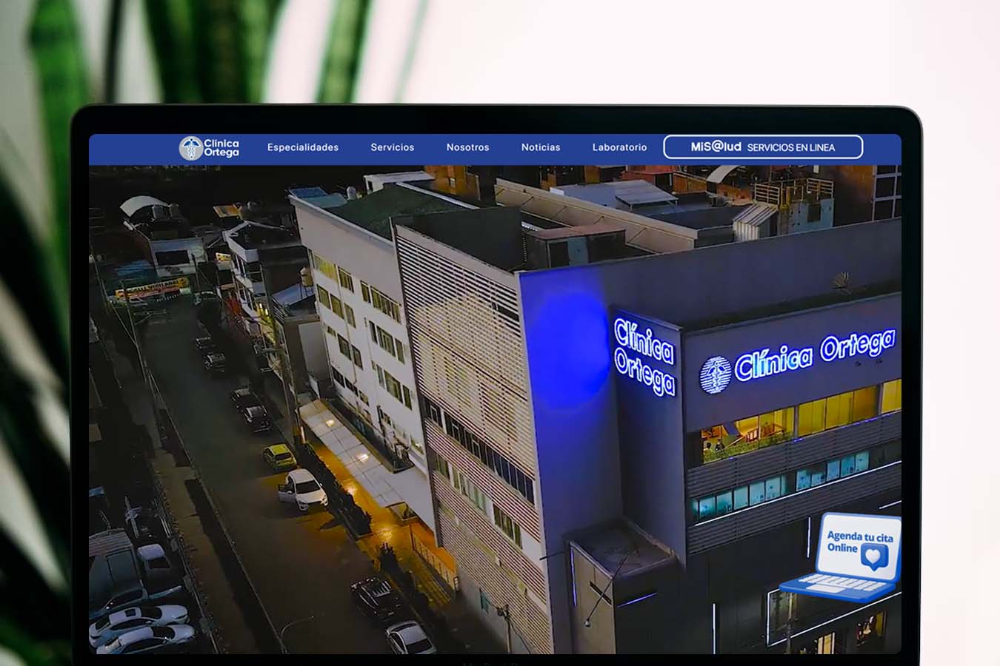
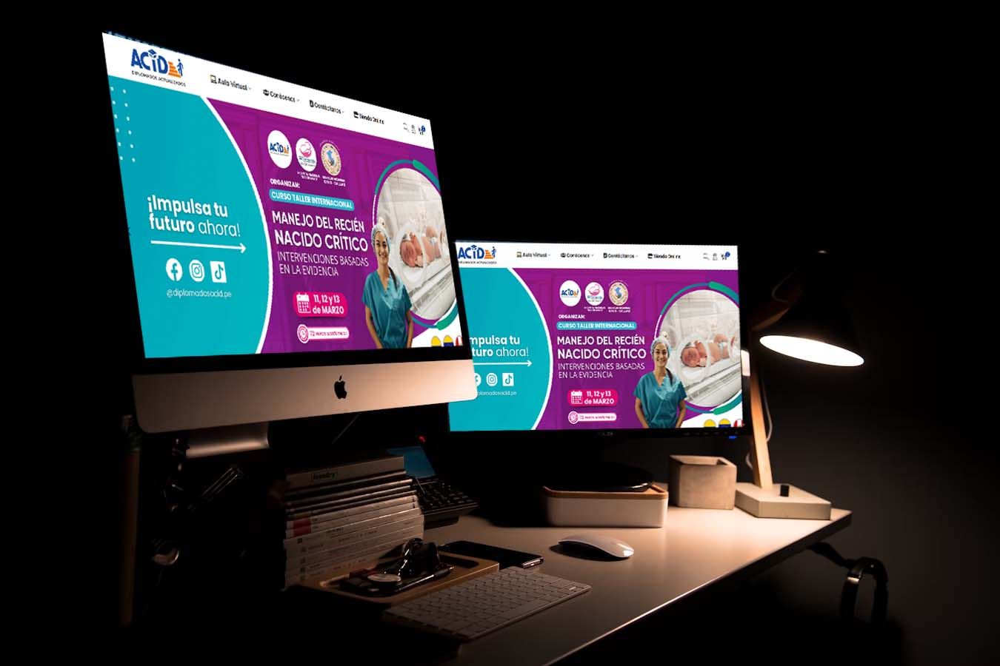
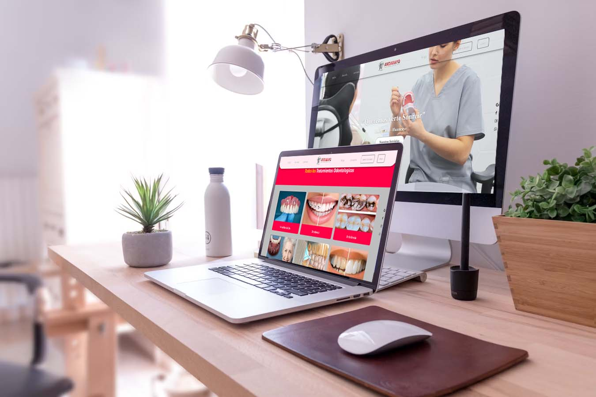
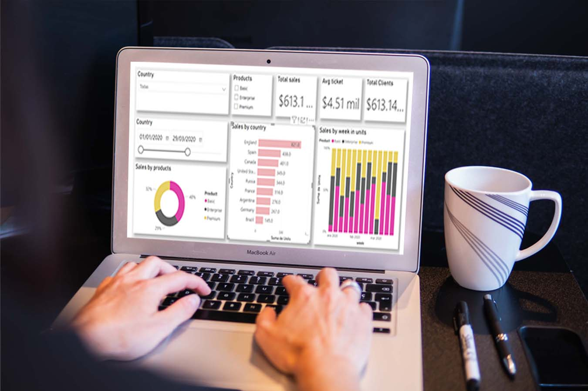
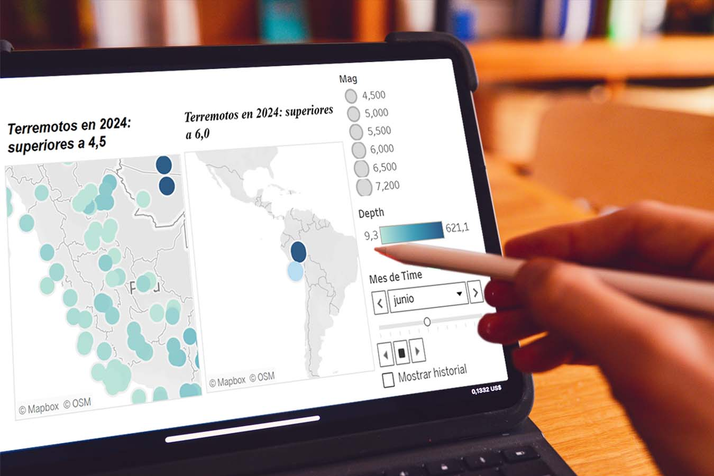

Proyecto para registrar usuario y personal
Aporto soluciones visuales modernas para mejorar la identidad y comunicación de cada proyecto.

Este análisis ofrece una visión integral del desempeño de ventas, basado en datos específicos de transacciones recientes

Visualización interactiva de datos sísmicos